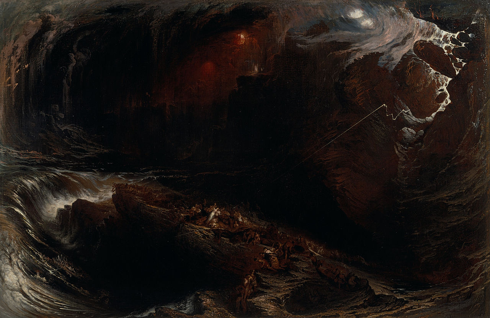
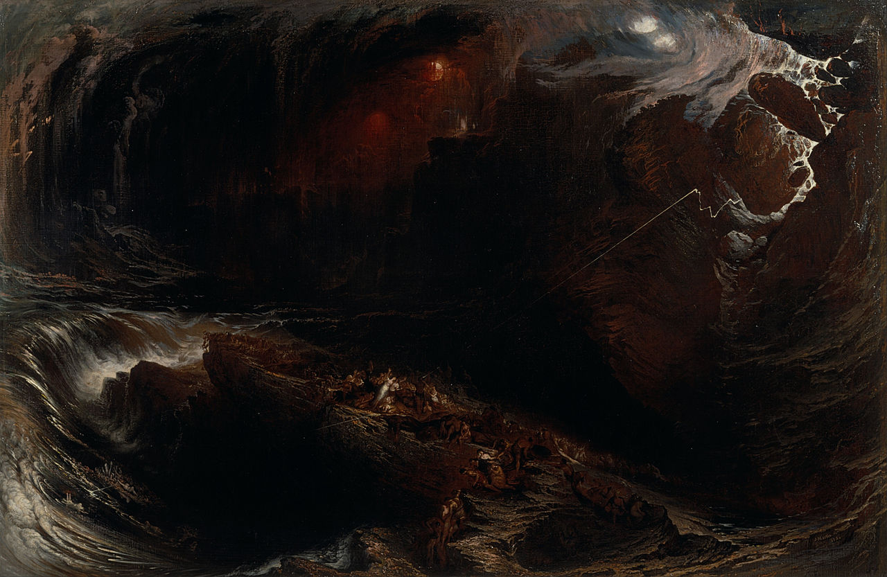

John Martin
- Nacimiento:
19 de julio de 1789; Haydon Bridge, England, United Kingdom
- Fallecimiento:
17 de febrero de 1854; Isle of Man, United Kingdom
- Género:
Pintura religiosa
- Campo:
Pintura, Ilustración, Grabado
- Institución:
Indefinido
Al principio fue un pintor de porcelana en conjunto con Bonifacio Musso, este viajó a Londres en 1806. Mientras pintaba porcelana, estudio arquitectura y perspectiva. A una edad temprana de 19 años se casó y se estableció en la ciudad ya mencionada. Una vez hecho esto, decidió enviar su primera pintura a la Academia en 1812, donde concretó su venta. El director de la academia lo alentó y el artista siguió enviando obras, aunque, estas estaban más referenciadas a la religión. Continuó su fascinación con la religión al pintar los estilos arquitectónicos del Antiguo Testamento. Con estas ventas se permitió comprar una casa en Marylebone, Londres, en esta se invitó a diferentes artistas, escritores y mecenas a las meriendas de las tardes. Continuó con el envío de cuadros y fotos, pero, nunca fue invitado como miembro a la academia, en cambio, se unió a la Sociedad de Artistas Británicos entre 1824 y 1838, donde también se recibieron sus obras. A pesar de su éxito, Martin empezó a reproducir sus obras y con esto, ganó más dinero de lo que le pagaban por sus cuadros originales. Pero, tuvo que parar sus actividades entre 1826 y 1836 para ayudar a su hermano en procesos judiciales, este había prendido fuego al ministro de York, sé salvó de la soga del ahorcado por problemas mentales que este poseía. Pero, estas enfermedades también torturaban la vida del artista, este desarrolló una forma de depresión maníaca que se potenció con los problemas financieros que tenía. A pesar de todo lo sucedido anteriormente, el artista se convirtió en pintor oficial del príncipe Leopoldo de Sajonia-Coburgo, tío de la reina Victoria, esto fue por un lapso de tiempo, luego se le fue concedido la Orden de Leopoldo y miembro electo de la Academia Belga. En 1853, mientras trabajaba en algunas pinturas, sufrió una parálisis repentina en el lado derecho, y al siguiente año, murió.